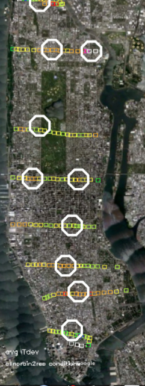

This page describes the measurements and processing needed to produce usuable data sets out of the walking field campaigns, the mounted instrumentation, and the surface characterization.
Teams of field agents would be deployed simultaneously across Manhattan during the hottest part of the day, walking predetermined routes while measureing temperature and relative humidity. Illumination sensors were included in most measurements and may be used to confine all measurements to shady locations.
Instrumentation - The field campaigns used a set of 8 handheld data loggers with accompanying relative humidity sensor, surface temperature probe, and light detector. All are manufactered by Vernier corporation with characteristics summarized in the table below. The surface temperature sensor was selected for its low heat capacity leading to a fast response time. The thermal response time was estimated by quickly changing environments and collecting data once per second as the measurements relaxed to the new conditions. The instrument characteristics are shown in the table below, with the light meter omitted because it is only used to differentiate between direct sun and shade.
| Vernier Instrument | Resolution/Accuracy | Response Time |
|---|---|---|
| Labquest 1 Data Logger | NA | NA |
| Surface temperature Probe | 0.03 C/0.2 C | ~20 seconds |
| Relative Humidity Sensor | 0.5%/10% | ~ 1 minute |
The instruments were mounted on white cardboard sheathed with white paper, with the ends of the probes sheilded from sunlight by a foam cup. The temperature probe was positioned to be in free air in the middle of the cup. If a light sensor was used it was mounted looking upwards. The instrument pack was mounted on backpacks filled with books or clothing to shield from body heat, and were mounted at a uniform 1.5 meters above the ground.
The instruments were compared to each other by placement in a large room with all sensors within a 15x15 cm square. Measurements were taken every 30 seconds for 15 minutes. Deviations from the average were calculated with the results shown below. All measurements reported here are after bias correction has been applied so all instruments are reporting the average temperature and RH.
| 0.22 C | 0.36 C | |
| |
1.1 % | 3.5 % |
Deployment - 8 trained field workers would walk simultaneously either along the east-west routes or the north-south routes (4 on each side) shown in the map above. The walks would start at 2 pm and take approximately 40 minutes, with best effort attempts to walk at a constant pace. Data was collected every 10 seconds. Field workers were instructed to stay on the shady side of the street in order to measure ambient air temperature rather than direct solar heating. Cloud cover and wind was noted each day.
Geolocation - Satellite GPS does not work well in an urban setting like New York City due to blockage of the sky. Near universal adaptation of smartphones did not occur until the end of the study, but as the tracking image below shows, even cell phone tracking exhibits a large amount of dithering on the order of 30 m (wider than the road). For this reason walks were broken into straight line segments, with several timings establishing the average fraction of the total walk spent in each segment. Geographical locations were interpolated by time into these straight line segments. In this way a fast walker would have fewer points spread uniformly along each segment than a slow walker (see figure below).
The next step is to break the segments into sub-segments of equal length in time. Typically a walk is broken into 20 sub-segments, each of about 100 seconds long, or 10 measurements. These 10 or so measurements (depending on walking speed) are averaged together to form segment averages, which are geographically fixed, allowing different days to be averaged together. All the following analysis uses these sub-segment averages.
De-trending, Deviations, and Averages - The temperature can change significantly during a 40 minute walk, which could lead to the spurious conclusion that one side of Manhattan is warmer than the other. To mitigate this effect, the change in temperature over an enseble of NYCmetnet stations (including Central Park) between 2 pm and 3 pm was used to create a linear ambient temperature trend, and all temperatures were subtracted from it to get detrended data (this was done with relative humidity and dewpoint as well).
A single day's data is not sufficient to locate predominant hot and cold spots. The same processes of convective circulation that produce clouds are often active in the atmosphere even if clouds are not present, producing transient hot and cold spots on the surface depending on where the air is rising or falling. These patterns move with time. The only way to find the underlying surface pattern is to average together a large amount of data so that the random convective processes cancel out.
Because central park may behave differently from the rest of the city, an average is formed of a number of representative streets that do not go through large elevation changes: 80th, 57th, 34th, 40th and Chambers streets. This average is subtracted from the detrended data to form what are called 'differences':
differences = (detrended data) - (detrended average)
The standard deviation of this data is calculated each day, and since it can change each day, it may make more sense to look at how many deviations each difference is from the average to see how significant it is:
deviations = (differences)/(daily standard deviation)
Both of these are types of anomalies. When data from a number of different days are averaged together, either the average difference or the average deviation is calculated. The results are shown in the anomaly maps
In the case of the Avenue walks in full sun, systematic biases were noted between routes. This is believed to be due to the exposed parts of the instruments experiencing solar heating, with different field agents mounting the instruments at different orientations. Since the field agents were assigned to the same route each time the biases were uniform and so subject to correction. This was done by assuming the endpoints of overlapping routes had to match values of temperature and dewpoint. The adjustment was done in two steps:
(1) adjusting each route by applying a uniform bias so that the starting point would match the endpoint of the route to the north of it.
(2) re-adjusting the entire set of routes by a constant bias so that the average would be zero.
Though the assumption of endpoint continuity may be questioned in areas of high variability, for most routes there was an area of uniformity surrounding the endpoints.
Ten sets of temperature, relative humidity, and illumination sensors were placed on lampposts around Manhattan for a period of 3 months (June 24 - Sep 20, 2013). Data was collected every 3 minutes during this period.
Instrumentation
Onset Corporation's Hobo weatherstation data loggers and probes were used for this measurement campaign. The relative humidity and temperature sensors are integrated into a single probe. The light sensor was attached separately and will be used largely to distinguish times of shade and direct solar illumination.
| Onset/Hobo Instrument | Resolution/Accuracy | Response Time |
|---|---|---|
| Micro Station Data Logger | NA | NA |
| 12 bit Temperature Sensor | 0.02 C/0.2 C | ~ 5 minutes |
| 12 bit Relative Humidity Sensor | 0.1%/2.5% | ~ 5 minutes |
In a second calibration 6 months later, all instruments were placed together on a table. In this case the average temperature of the Hobo and Vernier instruments were within 0.05 C of each other, and the RH within 2%.
Mounting - the instruments were mounted inside a ventilated pine thermometer shelter as distributed by Ben Meadows corporation. The enclosure was painted white to minimize radiation effects, and the temperature/RH probe was suspended in the middle of the box. The light probe was extended about half a meter to one side and faced upwards.

The boxes were mounted on street lamps between 3.1 and 3.9 meters high depending on signage to prevent tampering. The 3 month period was enforced by the New York City Department of Transportation, which grants permission for such temporary installations without community feedback. An example of installation is shown above left, with approximate locations of the installations marked with white hexagons to the right. Note that the placements coincide with the walking campaigns. In some cases exact coincidence was not possible because decorative lamp posts were excluded.
Data Processing - The three minute collection interval is intended to capture convective processes, which are typically 15 to 30 minutes long. The convective cycles can be eliminated by averaging over a period of about an hour, or brought to the forefront by subtracting these hourly averages from the raw data.
Other than the raw datasets (with bias correction), the hourly averages and the spatial and temporal variability will be calculated. Spatial variability is calculated as the standard deviation of each of the 10 instrument hourly averages. Temporal variability is calculated by subtracting the 1 hour running average from the raw data, and calculating the standard deviation each hour.
Surface characteristics include building area fraction and geometry from the National Building Statistics Database (NBSD) and groundcover type and albedo from satellite. Since the building information is completely described in the NBSD report it will not be discussed here.
All data sets must be remapped to a common grid. Since the NBSD data base and the MODIS satellite data originally used for vegetation retrieval have resolutions of about 250 m, a square grid of 0.025 degrees latitude and longitude has been the initial choice. The higher resolution LandSat data affords may result in use of a finer grid for later analysis. The grid for all analysis is just large enough to encompass Manhattan and approximately equal areas on either side of it.
All satellite data has had atmospheric correction applied to it before the analysis described below.
Vegetation - Typically vegetation is identified in satellite imagery by using the chorophyll signature of strong reflecton in the near infrared (NIR) and the strong absorption in the red. The most widely used test for vegetation is the Normalized Difference Vegetation Index (NDVI) defined by
NDVI = (NIR - red)/(NIR + red)
So that high and low light situations will give the same ratio. High values of NDVI indicate greater vegetation density, but it is not a direct relationship. Conversions for NDVI into Leaf Area Index (LAI) are found in the literature, though not in highly urbanized environments. Since the relationship between NDVI and vegetation is uncertain in the case of lightly vegetated urban environments, the best test for any correction is whether the noise is reduced in any model that uses vegetation data.
Albedo - this measures the percentage of sunlight reflected from the material under study. But sunlight covers an entire range of wavelengths and satellites typically only measures specific narrow bands of wavelengths. The products available that provide "narrow to broadband conversions" of albedo are typically of 1 km resolution, too coarse for our use.
Performing a narrow to broadband conversion requires the assumption that the reflectance in a narrow band of wavelengths represents the reflectance in nearby wavelengths. If a narrow band shows a reflectivity of 80%, the wavelengths in the portion of the spectrum surrounding it will also have a reflectivity of 80%. This type of adjustment is shown below, for the solar spectrum which comes through a clear atmosphere.
The other assumption is that reflectivity is the same in all directions. This in general is not the case, but building up a bi-directional reflectance function (BRDF) requires multiple images over a wide range of satellite and sun angles. The assumption of a flat BRDF may be tested for several images, but is not a focus of this study.
Supervised Classification - The high resolution (30 meters) provided by LandSat means each 250 m grid may have a range of different surface types that can be classified individually. By examining known surface types statistically (dense vegetation, grassland, urban, water, wetlands) multispectral classification rules can be devised to be applied to unknown regions. This 'supervised classification' fails when pixels have mixtures of surface types, but given the 30 m resolution of Landsat, unmixed pixels are predominant.